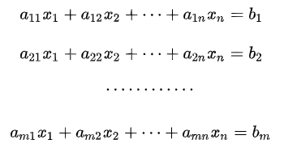
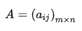
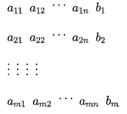
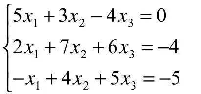
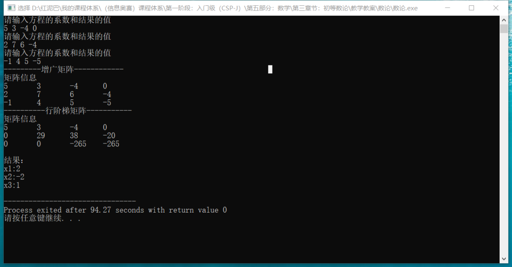

C++ 数学与算法系列之高斯消元法求解线性方程组
1. 前言
什么是消元法？
消元法是指将多个方程式组成的方程组中的若干个变量通过有限次地变换，消去方程式中的变量，通过简化方程式，从而获取结果的一种解题方法。
消元法主要有代入消元法、加减消元法、整体消元法、换元消元法、构造消元法、因式分解消元法、常数消元法、利用比例性质消元法等。
对方程式消元时，是基于如下的初等行变换规则：
- 改变
方程组中方程式的顺序，或者说无论先求解方程组中哪一个方程式，不影响方程组的解。 - 对一个方程式中的所有系数乘以或除以某一个非零数，不影响方程组的解。
- 方程式之间可以倍乘后相加或相减，不影响解。
其中最常用的为代入消元法和加减消元法，简要介绍一下。
代入消元法
如求解 2x+3y=10和x+y=4; 2 个方程式中的 x ,y变量时。
可以把第 2 个方程式变换成 x=4-y。
然后代入到第 1 个方程中，2(4-y)+3y=10。可求解出 y=2，x=2。
加减消元法
还是求解如上的方程组。
可以把第2 个方程式乘以 2 后再去减第 1 个方程式，或者说让第 1 个方程式减去第 2 个方程式乘以 2。
2x+3y-2x-2y=10-8。可以求解 y=2。
本文主要和大家聊聊高斯消元法，高斯(Gauss)消元法也称为简单消元法，是求解一般线性方程组的经典算法。
2. 高斯消元法
在理解高斯消元化之前，先理解几个基本概念：
什么是增广矩阵？
增广矩阵是线性代数中的概念，如下线性方程组：

使用每个方程式的系数构建的矩阵，称为系数矩阵，表示为：

用方程式的系数和结果构建的矩阵称为方程组的增广矩阵。如下图所示：

当方程组中的每一个方程的结果都为 0时, 即 b1=b2=b3=b4……bm=0，称这样的方程组为齐次线性方程组。
2.1 高斯消元法的思想
高斯消元的基本思想：
- 对于一个有
n个变量、有n个方程式的方程组。
- 把方程组中除了第
1个方程式外的其它方程式中的x1消去，同理，再把除了第2个方程式以下的方程组中其它方程式中的x2消去，依次类推，直到最后1个方程式中只留下xn。 - 目的：通过一系列的变换，让
增广矩阵变换成一个稀疏的行阶梯矩阵。
现通过具体的案例，理解高斯消元法。
如求解如下图所示的方程组：

- 用方程组中的所有方程式的系数和结果构建
增广矩阵，此矩阵有3行，为了描述方便，用r1表示第 1 行，r2 表示第 2 行，r3 表示第 3 行。
- 利用初等行变换规则将增广矩阵转换成行阶梯矩阵。
首先，定位至r1行（当前行）的第 1列(col=1)，以行（列号不变）扫描方式(从上向下)查找到本列中绝对值最大的数据，然后把最大值所在的行和当前行交换。如下图，因当前行所在列中的值就是最大值，故不需要交换。
Tips：为什么要交换？是不是一定要交换行？
- 消元过程，从方程组角度而言，消去第
1个方程后面x1变量。从矩阵角度而言，让r1后面行中的col列中的数据变为0。如消去r2、r3中col列中数据，可以使用倍数相加（减)变换方案，消元表达式：r2=r2*5-r1*2、r3=r3*5+r1。
- 定位到
r2行的第2列（col=2）。逻辑如上，以行扫描方式查找到本列中绝对值最大的数据，然后把最大值所在的行和当前行交换。因当前行的值29最大，不需要交换。
- 消去
r3中的x2变量，让r3行中只保留x3变量。消元表达式：r3=r3*29-r2*23。
- 最终会得到一个
行阶梯的系数矩阵，最后可以对矩阵以反序方式迭代求解。如下图所示：
- 最终可以得到
x3=1，x2=-2，x1=2。
问题思考
变换过程中，是不是一定需要交换行？
答案：不一定。
当方程组中的方程式不多时，换不换行其实并不重要。如下方程组。
其增广矩阵如下图所示。
可以先消去r2行中的x1变量。即r2=r2*-2*r3。
再消去r1行中的x2变量。即r1=r1*2+r2。
使用消元求解过程中，没有对行交换，同样能求解方程组中各变量的值。但是，当方程组中方程式的数量非常多时，如果不提供统一的处理规则，则无法对大量数据进行迭代处理。
算法设计的本质是发现或者为数据提供统一的逻辑处理单元。前文所述高斯消元法中之所以交换行，是保证最后生成上三角矩阵的前提，从而让算法更稳定。
求解方程组时，其解有 3 种情况：
- 无解，如果最后一行形如：
{0，0，0，……0 ,val!=0}则无解。 - 唯一解。消元后，最后生成标准的
上三角形矩阵。 - 无穷解。消元后，不是标准的
上三角形矩阵即不可确定。
2.2 编程实现
代码的主题是讨论高斯消元算法，只考虑了无解和唯一解 2 种情况且假设所有解都是整数。
#include <iostream>
#include <cmath>
using namespace std;
class GaussXy {
private:
//矩阵的行数,方程组中方程的数量
int row;
//矩阵的列数(系数和结果数量)
int col;
//二维数组
int **matrix;
//存储方程组的结果
int *result;
/*
* 初始化数据
*/
void init() {
string tips="请输入方程的系数和结果的值";
for(int i=0; i<row; i++) {
cout<<tips<<endl;
for(int j=0; j<col; j++) {
cin>>this->matrix[i][j];
}
}
}
/*
*查找列值最大的行
* curRow:当前行
* col:列号
*/
int getMaxRow(int curRow,int col ) {
//行扫描查找当前列中的最大值
int maxRow=curRow;
for(int i=curRow+1; i<this->row; i++) {
if( fabs( this->matrix[i][col]) > fabs( this->matrix[maxRow][col] ) ) {
maxRow=i;
}
}
return maxRow;
}
/*
*求两数最小公倍数
*/
int gbs(int num,int num_) {
//存储相乘结果
int res=num*num_;
int temp=0;
if(num<num_) {
temp=num;
num=num_;
num_=temp;
}
//辗转相除求最大公约数
while(num_!=0) {
temp=num_;
num_=num % num_;
num=temp;
}
//返回最小公倍数
return res / num;
}
/*
*交换行
*/
void swapRow(int curRow,int maxRow) {
int* tmp=this->matrix[curRow];
this->matrix[curRow]=this->matrix[maxRow];
this->matrix[maxRow]=tmp;
}
public:
/*
*构造函数
*/
GaussXy(int row,int col) {
this->row=row;
this->col=col;
//结果数组
this->result=new int[this->row*2];
for(int i=0; i<this->row*2; i++)
this->result[i]=1;
//通过输入数据构建矩阵
this->matrix=new int*[row];
for(int i=0; i<row; i++) {
this->matrix[i]=new int[col];
}
//初始化矩阵
this->init();
}
/*
*显示矩阵
*/
void showMatrix() {
cout<<"\n矩阵信息"<<endl;
for(int i=0; i<row; i++) {
for(int j=0; j<col; j++) {
cout<< this->matrix[i][j]<<"\t";
}
cout<<endl;
}
}
/*
* 核心代码：高斯消元
*/
void gaussXy() {
//最大行号
int maxRow=0;
//行扫描
for(int curRow=0,curCol=0; curRow<this->row; curRow++,curCol++) {
maxRow=0;
//行扫描查找最大值行
maxRow= this->getMaxRow(curRow,curCol);
//交换行
if(maxRow!=curRow) this->swapRow(curRow,maxRow);
//将 curRow 以下的行和 curRow 行消元
for(int nextRow=curRow+1; nextRow<this->row; nextRow++) {
if( this->matrix[nextRow][curCol] !=0 ) {
//找两数绝对值的最小公倍数
int gbs= this->gbs(fabs(this->matrix[curRow][curCol]) ,fabs(this->matrix[nextRow][curCol] ) );
//倍数
int curRowBs= gbs/fabs( this->matrix[curRow][curCol] );
//倍数
int nextRowBs=gbs / fabs(this->matrix[nextRow][curCol]) ;
//一正一负
if( this->matrix[curRow][curCol] * this->matrix[nextRow][curCol] < 0 )curRowBs=-curRowBs;
//列扫描，消元行中的变量
for ( int j=curCol; j<this->col; j++) {
this->matrix[nextRow][j]=this->matrix[nextRow][j]*nextRowBs - this->matrix[curRow][j]*curRowBs;
}
}
}
}
}
/*
*求解
*/
void getResult() {
//如果最后一行形如： {0，0，0，……0 val!=0} 则无解
if( this->matrix[this->row-1][this->col-2]==0 && this->matrix[this->row-1][this->col-1]!=0 )
cout<<"无解"<<endl;
int idx=0;
//存储每行最后一列的值
int res=0;
int curCol=0;
//如果是严格的行阶梯矩阵，则有唯一解
for(int curRow=this->row-1; curRow>=0; curRow--) {
int idx=this->row-1;
int res=this->matrix[curRow][this->col-1];
int curCol=this->col-2;
for(; curCol>=0; curCol--) {
//为零结束
if( this->matrix[curRow][curCol]==0) break;
//减去
res-=this->matrix[curRow][curCol]*this->result[idx--];
}
//补回来
res+=this->matrix[curRow][curCol+1];
//只取整数
this->result[curRow]= res / this->matrix[curRow][curCol+1] ;
}
//输出结果
cout<<"\n结果："<<endl;
for(int i=0; i<this->row; i++ )
cout<<"x"<<i+1<<":"<<this->result[i]<<endl;
}
};
//测试
int main() {
GaussXy* gaussXy=new GaussXy(3,4);
cout<<"---------------------";
gaussXy->showMatrix();
//高斯消元
gaussXy->gaussXy();
cout<<"---------------------";
gaussXy->showMatrix();
gaussXy->getResult();
return 0;
}
输出结果：

3. 总结
本文讨论了高斯消元法的算法思想，基于此思想编码实现了对方程组的求解。本文旨在讲清楚高斯消元的核心逻辑，有兴趣者可在此代码的基础上继续研究、扩展。